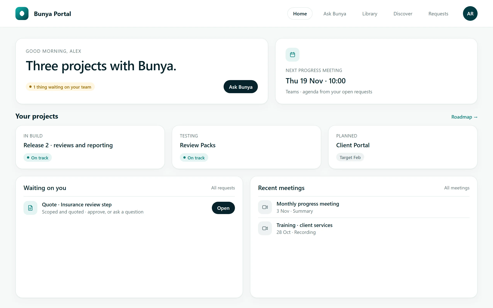
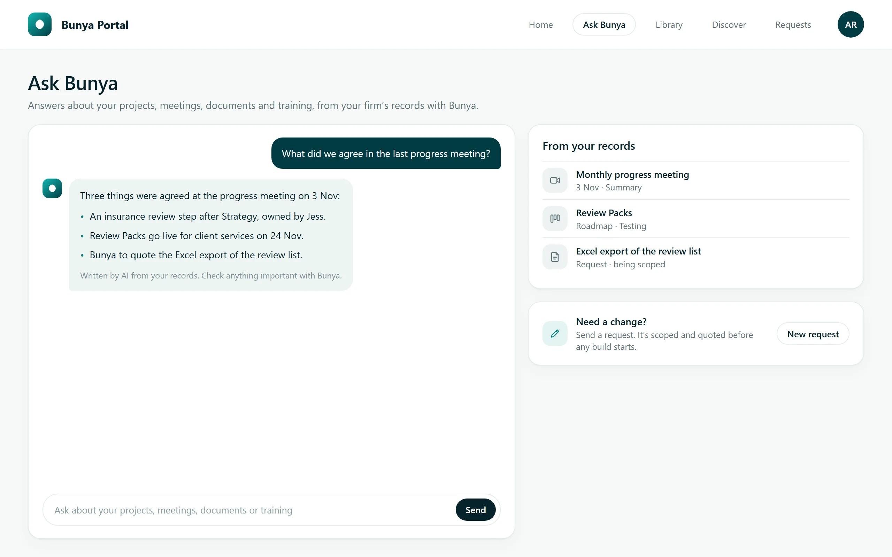
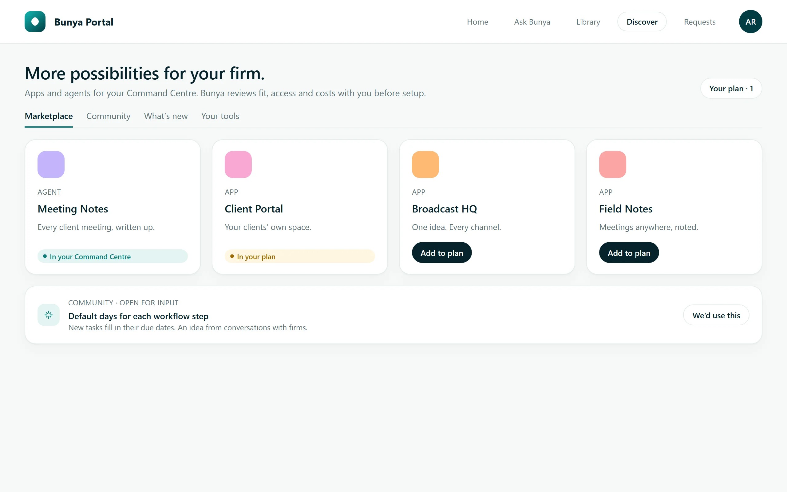
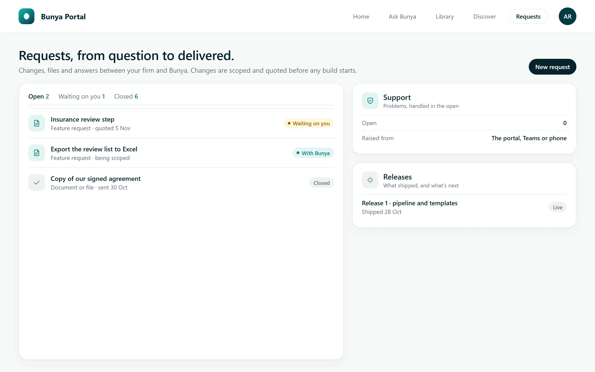

SupportHelp when your team needs it.
Email support comes with every Bunya, with a reply within 36 business hours, and every update. Bunya Shape is included when you subscribe, and Build and Build Team are there for our team to build with you.
Included with Command Centre, from $3 per account a monthVideo tutorials for each role, and a team to ask.
Your own Bunya Portal: ask questions, request changes and follow every project.
A regular session to choose the next improvement.
How it works
- 1Help
Video tutorials for each role, and a team to ask when something is unclear.
- 2Kept healthy
The connections agreed for your firm are looked after.
- 3Updates
Changes are scoped and tested before they’re released to your team.
- 4Improve
A regular session to choose what to improve next.
Three levels of support
Email support, with a reply within 36 business hours, and every update come with every Bunya. On top, choose your level. Switch level at the start of any month: just tell us before that month begins.
- 1Shape · included
Change your system yourself with AI, in plain English, through our portal: forms, reports, your own apps and agents. Chat and email support, with a reply within 24 business hours. Included when you subscribe. If you own Bunya, it’s included for your first month, then $1,503 a month, or drop back to email support at no cost.
- 2Build · $5,274 a month
Send us your ideas and we build them with you, over email: new reports, automations and agents, and changes to your Command Centre, scoped and tested with you. Chat, email and phone, with a reply within 6 business hours. Included for your first month.
- 3Build Team · $12,055 a month
Our team works alongside yours to customise your whole system: new processes automated, new agents and workflows, and a custom client portal. Most firms choose it for their first months, then move to another level.
Your Bunya Portal
Every firm gets one. Ask about your work, request changes, add apps and follow every project, in one place.




Your projects, anything waiting on your team, recent meetings and your next progress meeting.
Today, and with Support
What’s included
Questions
What does support cost?
Email support is included when you subscribe, with a reply within 36 business hours, and every update. If you buy Command Centre outright, support and updates are $1,497 a month. Shape is included when you subscribe; if you own Bunya, it’s included for your first month, then $1,503 a month. Build ($5,274 a month, first month included) and Build Team ($12,055) are the same whether you subscribe or own it. Switch level at the start of any month: just tell us before that month begins. Draft prices, A$ ex GST.
How do we get help?
Use the support channel from your handover, or email info@bunya.ai, and include the workflow and what you need help with.
What is Bunya Portal?
Your firm’s own space with Bunya. Everyone you invite sees chat, the library, meetings, the roadmap, requests and support. Invoices and balances are only for the people you choose.
Does Ask Bunya change anything?
No. It answers questions from your records. Changes go through a request, and are scoped and quoted before any build starts.
Can we buy apps in the portal?
No. Adding an app or agent to your plan starts the conversation. We review fit, access and costs with you before setup.
Support, ready when you are.
Included with Command Centre, from $3 per account a month.